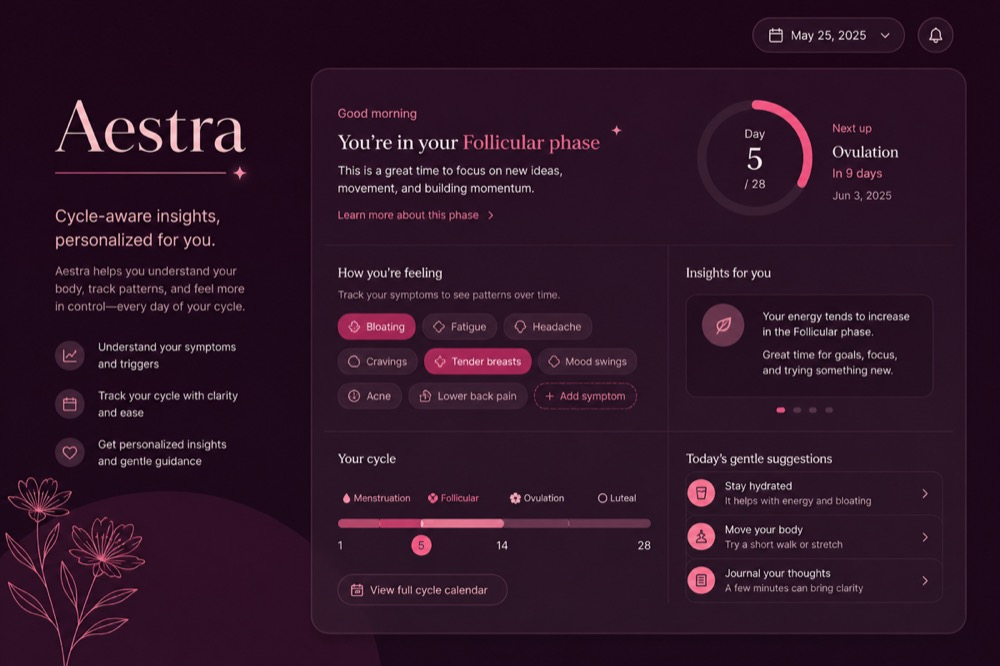
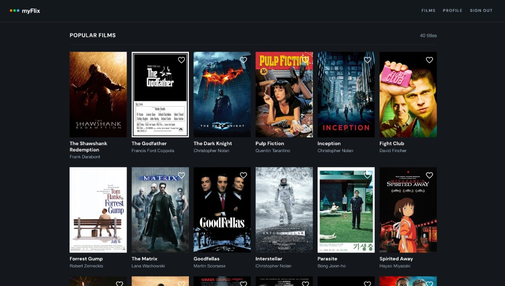
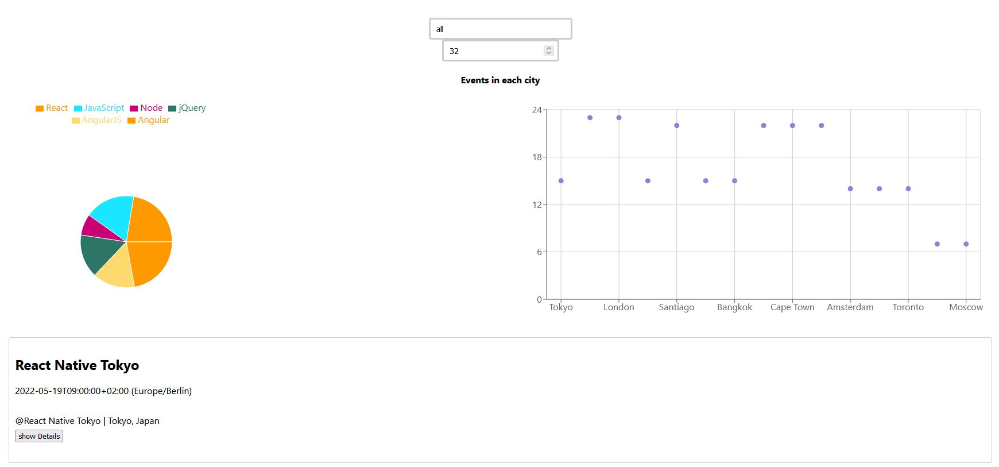
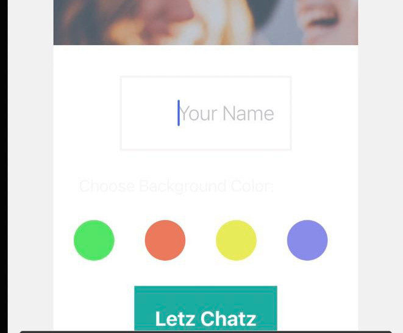
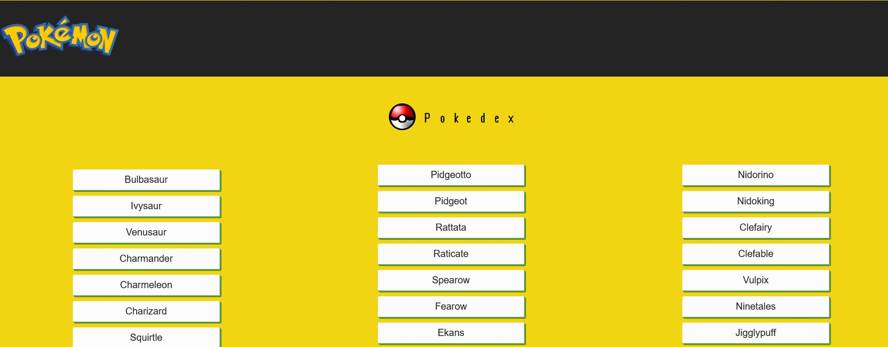

Full-stack developer building clear products on solid infrastructure — most recently Aestra & CycleBench for women’s hormonal health.

Python · FastAPI · CycleBench · Model-pFL

Angular · TypeScript · Angular Material

React · PWA · Google Calendar API · TDD

React Native · Firebase · Expo

JavaScript · HTML · CSS · REST API
Hospitality taught me to stay calm under pressure, run booking systems, and get the best out of a team on busy nights. I moved into web development through Career Foundry’s full-stack bootcamp, then kept building — including Aestra, an appointment-prep soft read on open CycleBench infrastructure for women’s hormonal health.
I want to turn that mix of product sense and engineering into full-time work: clear UIs, honest systems, and teams that care about craft. I’m happiest when I’m learning next to strong developers and shipping things people can actually use.
I travel whenever I can — backpacking in the Alps, or a spontaneous cheap flight for pizza in Naples. Closer to home: books, football with friends, working out, and the odd video game.